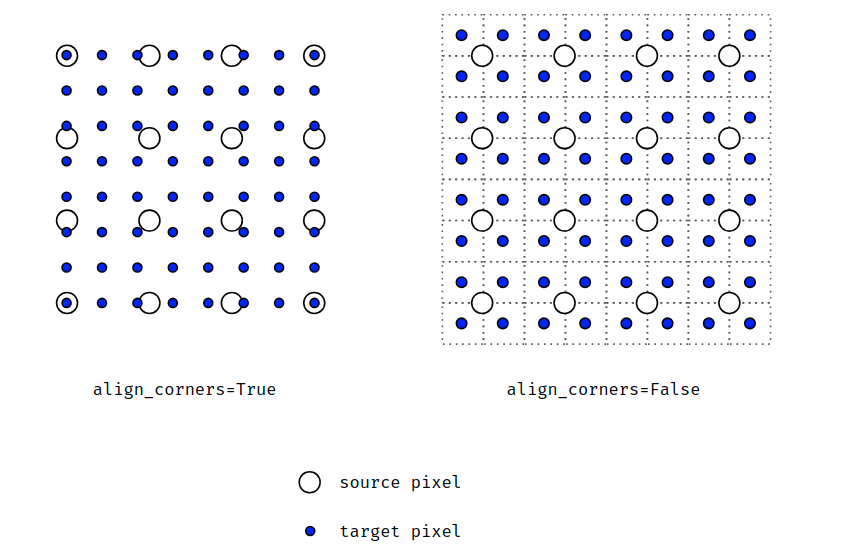

自己炼丹时候总结的一些 人生 经验 | My naive wiki for DL 😀
Numpy高级操作
https://docs.scipy.org/doc/numpy/reference/arrays.indexing.html
https://docs.scipy.org/doc/numpy/user/basics.broadcasting.html
numpy.where/argwhere多条件查询
1 | np.argwhere((mat > 0) and (mat < 1)) |
PyTorch中的numpy.argwhere的work around
1 | ((ten > 0) + (ten < 1) == 2).nonzero() |
PyTorch不同版本之间的一个小坑
1.0以后1
2
3
4
5
6
7
8
9
10Python 3.7.5 (default, Oct 31 2019, 15:18:51) [MSC v.1916 64 bit (AMD64)] :: Anaconda, Inc. on win32
Type "help", "copyright", "credits" or "license" for more information.
>>> import torch
>>> t = torch.randn(5,6)
>>> t > 0
tensor([[ True, True, True, True, True, False],
[ True, True, True, True, True, False],
[False, True, False, False, True, True],
[ True, False, True, True, False, False],
[ True, False, True, True, False, True]])
0.4.1以前1
2
3
4
5
6
7
8
9
10Python 3.7.5 (default, Oct 31 2019, 15:18:51) [MSC v.1916 64 bit (AMD64)] :: Anaconda, Inc. on win32
Type "help", "copyright", "credits" or "license" for more information.
>>> import torch
>>> t = torch.randn(5,6)
>>> t > 0
tensor([[0, 1, 1, 0, 1, 0],
[1, 1, 1, 1, 1, 0],
[1, 0, 0, 0, 0, 0],
[0, 1, 0, 1, 1, 1],
[1, 1, 0, 0, 0, 1]], dtype=torch.uint8)
Faster R-CNN中SmoothL1Loss相关内容
torchvision里的SmoothL1Loss是py-faster-rcnn中的所使用的SmoothL1Loss的一个特例。Faster R-CNN中使用的Loss的公式如下。
$$
f(x)=
\begin{cases}
0.5 \times\left(\operatorname{sigma}^{2} \times x\right)^{2} & if|x|<\frac{1}{\operatorname{sigma}^{2}} \\
|x|-0.5 / \operatorname{sigma}^{2} & {\text { otherwise }}
\end{cases}
$$
对于其中的其他参数，bbox_inside_weights用于控制只让正样本参与回归的计算，bbox_outside_weights起到公式中的$N_{reg}$的效果。
相关参考
卷积以及转置（反）卷积相关内容
https://arxiv.org/abs/1603.07285 中的第四章节讲得比较好 [pdf]
如何正确地为论文取一个题目
【研究目的】+【研究背景】：【研究方法】
如：Towards Cost-Efficient Content Placement in Media Cloud: Modeling and Analysis
研究目的：Towards Cost-Efficient Content Placement
研究背景：Media Cloud
研究方法：Modeling and Analysis
Pytorch分布式相关笔记
一些小坑
需要使用DDP包装后的模型来初始化优化器（optimizer），这部分个人的理解是：不这样的话相当于是影响了DDP对于模型在多卡之间同步的封装，会带来出乎意料的结果。
对于
DistributedSampler，需要在每个epoch之前进行set_epoch操作
关于各个环境相关变量的理解
WORLD_SIZE：总进程的数量，通常一个卡一个进程RANK：该进程的编号，从0到WORLD_SIZE-1MASTER_ADDR：RANK=0进程的IPMASTER_PORT：RANK=0进程的端口号
进程间通信相关
有关进程通信相关概念参考Writing Distributed Applications with PyTorch
其中
all_gather中需要进行gather操作的Tensor需要具有一致的尺寸，对于不同尺寸的Tensor进行需要进行pad之后再进行gather操作
杂七杂八
Pytorch中的DDP实现了绝大多数模块的同步，BatchNorm需要使用SyncBatchNorm进行转换；早期版本貌似对于2D输入的BatchNorm1d貌似支持较差，最近瞄了一眼最新版本的，貌似改过来了
对于buffer，默认从
RANK=0广播到其他进程。自己实现的带有buffer的模块如果需要做到与单卡训练等价的话，需要通过Pytorch的进程通信机制自行实现多卡对应功能
踩过的一些坑
在DDP中
M个GPU上batch=N的训练过程；并不等价于单个GPUbatch=M*N的训练过程。因为在多GPU梯度同步的过程中，采取的平均而不是累加规约方式。而Pytorch在梯度计算的时候并不会将梯度除以batch_size。在DDP训练中，如使用了
DistributedSampler，需要在每次epoch开始前调用set_epoch方法
PyTorch性能调优
在
DataLoader中使用num_worker > 0来进行异步的数据加载，并且推荐使用使用pin_memory=True使用
torch.backends.cudnn.benchmark= True来让框架选择最好的底层实现，以获得更好的性能关闭后接
BatchNorm的卷积层的bias使用
for param in model.parameters(): param.grad = None来替换model.zero_grad()使用
torch.jit1
2
3@torch.jit.script
def fused_gelu(x):
return x * 0.5 * (1.0 + torch.erf(x / 1.41421))
混合精度训练
1 | import torch |
插值中的“align corner”
当align corner为True时，认为像素是点，当align corner为False时，认为像素是方块
